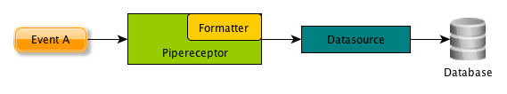
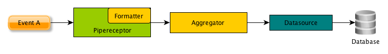
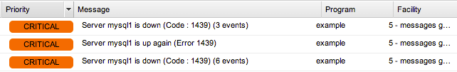
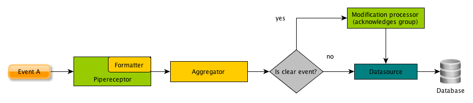
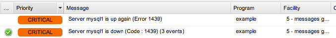

EventDB Correlator¶
What is EDBC?¶
EDBC (EventDB Correlator) is an agent for EventDB <https://www.netways.org/projects/eventdb/wiki>, our tool for integrating passive monitoring (like snmp, syslog or mail events) into icinga (or similar) monioring enviromnents. EDBC offers a lot of features that are required to cover advanced monitoring use cases:
- Pipe based event collection with the possibility to define your own input formats
- Basic support for acting as a snmp_agent by parsing and using SNMPTT mib files
- Aggregation of events based on advanced matcher patterns
- Clearance of aggregations via clear matchers or by timeout
- Extensible and easy to understand event processor mechanismn for writing your own processors
Basic concept¶
EDBC consists of three elements:
- Receptors : These are the inputs of edbc. For example, the PipeReceptor creates a pipe and listens for events on this pipe
- Processors: Processors take your events and perform logic on them. For example a AggregationProcessor takes your event, looks if it fits into a definition of an aggregation group and adds them to existing groups (or creates a new one) if so. Or a DatabasePersister takes your event and writes it into a database.
- Chains: Chains glue Processors and receptors together. For example, a simple chain (as shown in the image below) takes an event from a pipe, directs it to the aggregationprocessor and - if the event clears an aggregation - calls a ModifierProcessor that triggers an acknowledgement.

This is indeed a very simple example, you can create more complex chains, customize your messages or even create your own processors.
Installations¶
Prerequisites¶
You only need a minimal python setup in order to use edbc:
- Python 2.4+ (no Python 3 support)
- MySQLdb
Installing the executables¶
EDBC can be installed via make:
./configure --with-db-user=eventdb --with-db-pass=%YOUR DB PASSWORD&
make
This installs EDBC under /usr/local/edbc. If you prefer a different path, use the –prefix option in configure.
Note
For additional configuration options, call ./configure –help.
Setting up the database¶
Currently, only MySQL is supported. You can find the .sql schema files under etc/schema. call:
mysql -u root -p
mysql> CREATE DATABASE eventdb;
mysql> CREATE USER eventdb IDENTFIED BY '%YOUR PASSWORD%';
mysql> GRANT SELECT, INSERT, UPDATE, DELETE OM eventdb.* TO eventdb;
mysql> FLUSH PRIVILEGES;
mysql> quit;
cd etc/schema/mysql
mysql -u root -p eventdb < mysql_create.sql
Your password should be the one defined in your configure call (see Installing the executables).
Note
If you change your database credentials afterwards, you can modify the etc/conf.d/database.cfg in your installation path.
Overview¶
This section provides a few information about how edbc is structured and a short overview of the configuration. Configuration topics are discussed in depth in :ref:Configuration.
File layout¶
- bin/: Contains the edbc binary, which just calls lib/edbc.py
- lib/: Contains the source code
- libexec/: Contains executable templates, for example the snmp_handler
- etc/: Configuration and chain files are defined here
Configuration files¶
There are two types of configuration files: *.cfg files and ^*.chain files
.cfg files¶
*.cfg can be found underneath etc/conf.d (or another path if you modify your edbc.cfg file’s configdir directive. In this documentation we assume that configurations are under etc/conf.d) and define resources the chains can work with. These files are in the ConfigParser Format and therefore rather simple:
- [Brackets] define identifiers. These can later be referenced with @, but this will be discussed in Configuration
- Values for components are just defined using a “Key: Value” Syntax
.chain files¶
Chain files define how your event will processed and consist at least of one ‘in’ value and one ‘to_{nr}’ value. the {nr} defines at which position a processer stands. See Configuration for more details.
Important files¶
- etc/edbc.cfg contains the ‘global’ section and defines, in which directories
- In a default setup, etc/conf.d/database.cfg contains the database credentials.
- etc/conf.d/base_processors.cfg contains a few processors and examples for some use cases
Quick start guide¶
After edbc is installed, it already provides a basic configuration that should be suitable for all needs. In this chapter we explain how to perform a few common tasks without going to much into detail.
Setting up the database connection¶
If you need to change the database connection (although it can be defined in the ./configure flags) go to the etc/conf.d/database.cfg file. The values should be self-explanatory, but are discussed in detail in Datasources (class:datasource).
Configuration¶
Basic configuration syntax¶
Note
This section intends to give you a good understanding how edbc works. Especially step 2 and step 3 are way more comprehensive than normally needed and simplified in the last step. If you just need a quick overview, refer to the quickstart guide.
A component always starts with the id of the object in brackets, followed by a set of key: value pairs. For example the database configuration found in your etc/conf.d/database.cfg looks like this:
[mysql]
class: datasource
type: mysql
host: localhost
port: 3306
table: event
database: eventdb
user: eventdb
password: eventdb
Let’s look at this configuration more in depth:
[mysql] only defines that this component has the id mysql - and can be referenced with @mysql in other components (we’ll see this later)
- class: datasource defines the type of the component. Possible types are:
- datasource: A component which can execute SQL commands and is able to persist data
- processor: A generic processor that performs arbitary actions on an event
- receptor: A component which is able to receive arbitary events and normalizes themfor further processing
- transformer: A component that defines how the raw event data from a receptor is transformed to normalized events
type: Defines the concrete component type to use
template: Optional definition of a parent configuration which is used as the base configuration for the new template. class and type can be omitted when using this definition
Any further settings are component specific.
Note
If you’re a developer and curious: The class/type definition is used to determine the class name of the objects: %type%_%class%
Step by step: 1. The most minimal setup¶
In the first place, the configuration looks more complicated then it is, so let’s start by setting up a simple chain that just receives messages through a pipe and writes them to the EventDB database.
The following image shows how our chaining will look like:
1. General setup¶
- Make sure your etc/conf.d/database.cfg has the correct credentials set
- Create a file called example_config.cfg in your etc/conf.d/database.cfg. We’ll define every component we need here
2. Setting up a receptor¶
The first component we have to care for is the receptor. As we want our events to be received on a pipe, we use a Pipe Receptor (type:pipe) that creates and listens at the pipe /usr/local/var/edbc_example.pipe. So let’s add it to our example_config.cfg and give it the id example-pipe
[example-pipe]
class: receptor
type: pipe
path: /usr/local/var/edbc_example.pipe
One important thing is missing here: Only receptors must define how a EventDB Events is created. In Basic configuration syntax, we already heard that components called transformers are responsible for this. In this case you want a StringTransformer (type: string) to format your message input, so we create one, called simple-transformer
[simple-transformer]
class: transformer
type: string
format: (?P<PRIORITY>\d+) (?P<FACILITY>\d+) (?P<MESSAGE>.*)$
fixed: program=example
Here, two directives are important: * format: This is a python regular expression that maps parts of the message to event descriptors. A message with the format ‘5 4 A testmessage’ would create an event with priority of 5, facility 4 and message text ‘A testmessage’ * fixed: a comma separated key=value list defining event parameters that are constant. Here our event will always have the program ‘example’. .. note:: (?P<NAME>...) are named matching groups in python, see Pythons re documentation for additional information
Now we only need to tell our receptor that it uses the simple-transformer for parsing events. This is done by adding a format property that contains the simple-transformer instance. Instances always have the prefix @, so our example_config.cfg now looks like this:
[example-pipe]
class: receptor
type: pipe
path: /usr/local/var/edbc_example.pipe
format: @simple-transformer
[simple-transformer]
class: transformer
type: string
format: (?P<PRIORITY>\d+) (?P<FACILITY>\d+) (?P<MESSAGE>.*)$
fixed: program=example
That’s it, now we can proceed to the last step
3. Creating a chain¶
No we only have to create a simple chain that takes the events from our example-pipe Receptor and writes them to our database. For this, simple create a example_config.chain file under etc/chains/.
We’ll call our chain example-chain, so like always, we’re starting with:
[example-chain]
Now we have to define the input of the chain by adding an in directive referencing the example-pipe instance:
[example-chain]
in: @example-pipe
And now, we add our only chain component, the datasource by adding a to directive pointing to our datasource:
[example-chain]
in: @example-pipe
to_1: @mysql
Note
The number after to_ is mandatory and defines the position in the chain in which the processor is executed. We see later that we can also use the return code of a chain component as a condition for other chain components.
4. Test it¶
Now we can start edbc:
/usr/local/edbc/bin/edbc
If everything went fine, there should be a pipe at /usr/local/var/edbc_example.pipe.
Let’s fire a test event to see if it works:
# echo "5 4 testmessage" > /usr/local/var/edbc_example.pipe
We now should have an event in our database with priority 5, facility 4 and testmessage as the message:
# mysql -u eventdb -p eventdb
mysql> SELECT facility,priority,message,program FROM event ORDER BY id desc limit 1;
+----------+----------+-------------+---------+
| facility | priority | message | program |
+----------+----------+-------------+---------+
| 4 | 5 | testmessage | example |
+----------+----------+-------------+---------+
1 row in set (0.00 sec)
Step by step: 2. Adding aggregators¶
Until now, there’s nothing special about our setup, we just accept events and write them to the database. We will now add some logic. Let’s say we want to take events with a message like ‘The server ... just went down. Errorcode xyz’ and aggregate them if the server name and the errorcode is the same, so we have for example ‘Server mysql1-ad is down (Code : 1152) (10 Events) in our frontend. This can be accomplished with the aggregator processor, which we have to add to our chain.
So our old chain:
Will at the end of this chapter look like this:
1. Define the aggregation processor component¶
First we will again look in our example_config.cfg and add an aggregation processor with the id example-aggregator:
[example-aggregator]
class: processor
type: aggregator
In order to recognize if a message should be aggregated, we have to define a matcher directive:
[example-aggregator]
class: processor
type: aggregator
matcher: message REGEXP 'The server (?P<HOSTNAME>\w+) just went down. Errorcode (?P<CODE>\d+)'
The matched groups are, together with the id, used to create a group identifier. If an event starts a new aggregation group, it becomes a group leader. Every event with the same group identifier will be added to the aggregation group of the group leader.
Now we want to add an aggregated message. This is the message that will be written to the group leaders alternative_message field in the database and can reference fields from the matcher:
[example-aggregator]
class: processor
type: aggregation
matcher: message REGEXP 'The server (?P<HOSTNAME>\w+) just went down. Errorcode (?P<CODE>\d+)'
aggregateMessage: 'Server $HOSTNAME is down (Code : $CODE) ($_COUNT events)
Note
$NAME resolves to the matcher field called name, #XYZ resolves to the event property XYZ. So #message would resolve to the (group leaders) message, $_COUNT is just a hint for the eventdb frontend and will be replaced with the actual group count
Additionally, we need to tell our aggregator from which datasource it can gather group information, this is normally the database you’re writing to:
[example-aggregator]
class: processor
type: aggregation
matcher: message REGEXP 'The server (?P<HOSTNAME>\w+) just went down. Errorcode (?P<CODE>\d+)'
aggregateMessage: Server $HOSTNAME is down (Code : $CODE) ($_COUNT events)
datasource: @mysql
Note
You can also add a maxDelay directive to the aggregator, so a new aggregation group will be created after maxDelay seconds passed without a matching event.
2. Update the chain¶
Our chain now only needs the aggregator being added between the input and the database:
[example-chain]
in: @example-pipe
to_1: @example-aggregator
to_2: @mysql
3. Test it¶
To test it, we can write a few similar messages to the pipe, like:
# echo '2 5 The server mysql just went down. Errorcode 1434' >> /usr/local/var/edbc_example.pipe
# echo '2 5 The server mysql just went down. Errorcode 1434' >> /usr/local/var/edbc_example.pipe
.,,
# echo '2 5 The server mysql just went down. Errorcode 1434' >> /usr/local/var/edbc_example.pipe
And a few messaages with a different errorcode:
# echo '2 5 The server mysql just went down. Errorcode 1454' >> /usr/local/var/edbc_example.pipe
...
# echo '2 5 The server mysql just went down. Errorcode 1434' >> /usr/local/var/edbc_example.pipe
# echo '2 5 The server mysql just went down. Errorcode 1439' >> /usr/local/var/edbc_example.pipe
In the frontend, this should result in a resultset like this:

4. One step further: Adding a clear message¶
Sometimes, you receive a clear message for previous events which tell you that the problem is fixed now. After receiveing such an event, continuing to summarize events doesn’t make sense, as new events belong to a new problem. To realize this, our aggregation processor can be extended with a clear field
First we add the clear message:
[example-aggregator]
class: processor
type: aggregation
matcher: message REGEXP 'The server (?P<HOSTNAME>\w+) just went down. Errorcode (?P<CODE>\d+)'
aggregateMessage: 'Server $HOSTNAME is down (Code : $CODE) ($_COUNT events)
datasource: @mysql
clear: message REGEXP 'Server \w+ is up again (Error \d+)'
Warning
This example won’t work! Read on.
There’s one thing you have to do now: As the matcher defines which group the event belongs to and the clear message should only clear this specific group, you have to add the clear message to the matcher (sounds complicated, but is simple):
[example-aggregator]
class: processor
type: aggregation
matcher: message REGEXP 'The server (?P<HOSTNAME>\w+) just went down. Errorcode (?P<CODE>\d+)' or message REGEXP 'Server (?P<HOSTNAME>\w+) is up again \(Error (?P<CODE>\d+)\)'
aggregateMessage: Server $HOSTNAME is down (Code : $CODE) ($_COUNT events)
datasource: @mysql
clear: message REGEXP 'Server \w+ is up again \(Error \d+\)'
Now the clear message will be processed by the aggregator and the group will be cleared:
# echo '2 5 The server mysql1 just went down. Errorcode 1439' >> /usr/local/var/edbc_example.pipe
...
# echo '2 5 The server mysql1 just went down. Errorcode 1439' >> /usr/local/var/edbc_example.pipe
# echo '2 5 Server mysql1 is up again (Error 1439)' >> /usr/local/var/edbc_example.pipe
# echo '2 5 The server mysql1 just went down. Errorcode 1439' >> /usr/local/var/edbc_example.pipe
# echo '2 5 The server mysql1 just went down. Errorcode 1439' >> /usr/local/var/edbc_example.pipe
# echo '2 5 The server mysql1 just went down. Errorcode 1439' >> /usr/local/var/edbc_example.pipe
The result in the fronten looks like this:
Step by step: 3. Conditional processing - Autoacknowledge events¶
In the last part of this ste by step guide, we show how to execute processors only if a previous processor finished with a certain return code. A common use case of this is to acknowledge events after a clear event comes.
Our chain will now get an additional component, called modification processor, that only processes the event if a group has been cleared.
1. Defining a modification processor¶
We’ll continue where we left in step 4. One step further: Adding a clear message. When we clear our group, all previous ‘server down’ events should be automatically acknowledged. For this, we need to define a Modifier Process (type:modifier) with the id ‘example-acknowledger’ in our example-config.cfg:
[example-acknowledger]
class: processor
type: modifier
A modifier can have two targets:
- group defines that this modifier acts upon the whole group. If you use target: group you always need to add a datasource, too (like in the aggregator)
- event defines that this modifier only defines the event that it currently processes.
We want our whole group to be cleared, so we use target: group and add our mysql datasource:
[example-acknowledger]
class: processor
type: modifier
target: group
datasource: @mysql
And now we define which modifications will be performed upon the group. This can be done with two directives:
- overwrites: is a key=value;key=value string that defines which fields will be overwritten (e.g. priority=1;facility=9 would overwrite the priority and the facility of the event)
- acknowledge: This is the same like ack=1 in the overwrite field and triggers an acknowledge of the whole group (or event, depending on your target setting)
- We only want to acknowledge our aggregated group, so we add a acknowledge: true setting::
- [example-acknowledger] class: processor type: modifier target: group datasource: @mysql acknowledge: true
That’s it, our acknowledger is ready and we can update our chain
Note
A default installation already has acknowledge_event and acknowledge_group processors defined that you can use, but we defined it here to see how it works
2. Updating the chain¶
Let’s recall our chain:
[example-chain]
in: @example-pipe
to_1: @example-aggregator
to_2: @mysql
You see that every event is being processed by every event in our chain. We defined components by to_ followed by an arbitary number, while lower numbers are executed first. In order to direct our event only if a certain condition applies, we have to extend the syntax a bit: You can define a processor target with to_ followed by a set of conditions, followed by a number that determines the position.
Conditions are in the syntax %processor_number%[%return value%]. Every processor returns a string like ‘OK’, ‘PASS’, etc. We’re interested in our aggregation processor, which returns one of the following values:
- PASS: The matcher didn’t match the current event, it is not processed by the aggregator
- AGGR: The event is added to an existing group
- NEW : The event started a new aggregation group, future matching events will be added to this group
- CLEAR: The ‘clear’ matcher matched this event and cleared an aggregation group
Our aggregator has the position 1 and we now want the event to be directed to the modification processor we created in 1. Defining a modification processor only if the aggregator return CLEAR. so our condition looks like this:
1[CLEAR]
Now we add our conditional processor to the example chain and end up with the following definition:
[example-chain]
in: @example-pipe
to_1: @example-aggregator
to_1[CLEAR]_2: @example-acknowledger
to_3: @mysql
3. Test it¶
Using the same test as in the last section, our EventDB frontend looks like this:
As you see, the group has been acknowledged after the clear event
Step by step: 4. Simplify it¶
Currently, the setup covers most needs, but is rather complicated. If you want to change aggregators, you need a lot of knowledge and modify a lot of files. Also the autoacknwoledge is very complicated for the rather simple action you want to perform. EDBC has a few shortcuts for the usual setups:
1. Directly acknowledge in the aggregator¶
The whole Step 3 can be skipped when you add the acknowledge_on_clear directive your aggregation processor:
[example-aggregator]
class: processor
type: aggregation
matcher: message REGEXP 'The server (?P<HOSTNAME>\w+) just went down. Errorcode (?P<CODE>\d+)' or message REGEXP 'Server (?P<HOSTNAME>\w+) is up again \(Error (?P<CODE>\d+)\)'
acknowledge_on_clear: True,
aggregateMessage: Server $HOSTNAME is down (Code : $CODE) ($_COUNT events)
datasource: @mysql
clear: message REGEXP 'Server \w+ is up again \(Error \d+\)'
You can then remve the example-acknowledger definition and cut down your chain to:
[example-chain]
in: @example-pipe
to_1: @example-aggregator
to_2: @mysql
2. Use the multiaggregation processor for defining rules¶
If you now want to add a new aggregator, you would have to perform two steps:
- Add the aggregation processor with the new rule in your example_config.cfg
- Add the aggregation processor to your chain
Wouldn’t it be easier to have one configuration file, where all aggregation rules are defined ?
This is possible with the multiaggregation processor. This processor reads additional *.rules files and creates and manages the aggregators according to this file. So let’s add a multiaggregator to our config:
[example-multiaggregator]
class: processor
type: aggregation
ruleset: /usr/local/edbc/etc/rules/example.rules
acknowldge_on_clear: True
datasource: @mysql
This aggregator reads the (to be created) example.rules file and sets up the aggregators. The rules file may look like this:
[rule1]
match: message REGEXP 'The server (?P<HOSTNAME>\w+) just went down. Errorcode (?P<CODE>\d+)' or message REGEXP 'Server (?P<HOSTNAME>\w+) is up again \(Error (?P<CODE>\d+)\)'
clear: message REGEXP 'Server \w+ is up again \(Error \d+\)'
aggregateMessage: Server $HOSTNAME is down (Code : $CODE) ($_COUNT events)
[rule2]
match: message STARTS WITH 'voice alert'
[rule3]
...
Now we need to change the chain so the multiaggregator is used instead of the simple aggregator:
You can then remve the example-acknowledger definition and cut down your chain to:
[example-chain]
in: @example-pipe
to_1: @example-multiaggregator
to_2: @mysql
And we’re set. If you now want to add a rule, you can define it in the example.rules file and just reload edbc.
EDBC Matcher syntax¶
Syntax definition¶
The syntax for matchers can be:
MATCHER: MATCHER_STMT | MATCHER CONJUNCTION MATCHER_STMT | (MATCHER)
MATCHER_STMT: STRING_MATCHER | NUMERIC_MATCHER | SET_MATCHER | IP_MATCHER
STRING_MATCHER: #field STRING_OPERATOR STRING
NUMERIC_MATCHER: #field NUMERIC_OPERATOR #NUMBER
SET_MATCHER: #field SET_OPERATOR (SET)
IP_MATCHER: #field IP_OPERATOR_DEFINITION
STRING_OPERATOR: ['IS NOT','CONTAINS','REGEXP','DOES NOT CONTAIN','STARTS WITH','ENDS WITH','IS']
SET_OPERATOR: ['NOT IN','IN']
NUMERIC_OPERATOR:['>=','<=','>','!=','<','=']
IP_OPERATOR_DEFINITION: IN IP RANGE '#ip "-" #ip' | NOT IN IP RANGE '#ip "-" #ip' | IN NETWORK '#submask_or_cidr'| NOT IN NETWORK '#submask_or_cidr'
SET = #value | SET, #value
CONJUNCTION: ["OR","AND", CONJUNCTION " NOT" ]
Examples¶
Simple message check:
message IS 'message to check'
Simple message check with priority:
message IS 'message to check' AND priority >= 4
REGEXP check:
message REGEXP 'srv-[A-Za-z]\d+'
Limit to network:
host_address IN NETWORK "192.168.0.0/24"
Limit to ip range:
host_address IN IP RANGE "192.168.4.4-192.168.5.2"
Pitfalls¶
- Operators and conjunctions must be uppercase in matchers
- Regexp and String matchers are case insensitive
- The only string operators supported on host_address are =, use the ip operators for advanced checks here
Component Reference¶
Transformer (class: transformer)¶
Transformers take the raw event input (mostly strings) and convert them into normalized events
StringTransformer (type: string)¶
String transformers take raw string input and convert them events using a regular expression or fixed settings
Example:
[rsyslog_reader] class:transformer type:string format:^(?P<CREATED>[a-zA-Z]{2,3} \d\d \d\d:\d\d:\d\d) (?P<HOST>[^ ]+)( (?P<PROGRAM>[^:]+):)? (?P<MESSAGE>.*)$ fixed: Priority=1,Facility=1Parameters
defaultmessage: If no message is defined, this message (normally ‘No message given’) is used
- format: A regular expression extracting the important event properties of an event with named matching groups. You can define any property you want, but persisted properties are per default:
- MESSAGE
- HOST
- HOST_ADDRESS
- PRIORITY
- FACILITY
- PROGRAM
- CREATED
- MODIFIED
fixed: A comma seperated key=value list defining which properties are set as constants
SNMPTransformer (type: snmp)¶
SNMP Transformer are able to read MIB files produced by snmpttconvertmib and parse their EVENT, FORMAT and REGEXP directives. It expects snmptraps to be received with numerical OIDs.
Example:
[snmp_reader] class: transformer type: snmp mib_dir: /usr/share/snmptt/mibs fixed: Priority=3,Facility=5,program=snmp
Parameters
mib_dir: The directory to load the mib files snmpttconvertmib created. This is a required field
trap_format: Only define this if you create a modified trap handler Define how to parse the string data received from the traphandler
- prioritymap: Define a comma seperated severity=priority mapping. The event’s severity needn’t to match the whole string, if it only begins with the string defined in your map it will be mapped to the priority, too. Per default the map looks like this:
- emer = 0
- aler = 1
- crit = 2
- majo = 2
- erro = 3
- warn = 4
- noti = 5
- mino = 5
- ok = 5
- info = 6
- norm = 6
- debu = 7
fixed: A comma seperated key=value list defining which properties are set as constants
MailTransformer (type: mail)¶
Mailtransformers are tightly coupled to mailreceptor-ref and allow to interpret incoming mails as events, depending on a previously defined ruleset.
Example:
[mail_reader] class: transformer type: mail rules: /usr/local/edbc/etc/mail.def
Parameters:
* **rules**: The file that contains the rule definitions.
The mail rule definition has a similar configuration syntax as the other configuration files. It usually consists of one default section:
[default]
ignore: true
facility: 1
priority: 1
program: mail
host: #From
message: #Message
This example defines that all events that come via mail have the facility 1, priority 1, the program field set to ‘mail’. The # directives say, a field from the mail header should be used (#Message is a special case, as it uses the mail body instead of a header). The ignore:true says that all mails that only match the default rule and no other should not be written to mail (remove this if you want all mails forwarded to you to appear in the eventdb).
You can now use additional rules to match the specific mails that are interesting for you. The matcher ist defined in the matcher field and follows the EDBC Matcher syntax
[rule1]
matcher: FROM CONTAINS 'localhost'
facility: 3
host_name: 'srv-mail'
[rule2]
matcher: MESSAGE REGEXP 'Host (?P<HOST_NAME>\w*) is down'
priority: 6
host_name: $HOST_NAME
Here we defined two rules: rule1 says that all mails that contain ‘localhost’ in its from field get facility 3 and the hostname ‘srv-mail’ (in addition to the values defined in the ‘default’ section). The second rule says that if the message is for example ‘Host test ist down’, it matches the regexp, the priority is set to 6 and the hostname is substituted to ‘test’. ($ means that the regular expression matching group from the matcher is used).
Please note that only the first matching rule is being used.
Receptors (class:receptor)¶
Receptors are the components that receive raw events and therefore the interface of edbc to the world. They are usually coupled with a Transformer (class: transformer) and at the start of every event chain.
Pipe Receptor (type:pipe)¶
A pipe receptor opens a pipe upon creation and receives events
Example:
[pipe] class:receptor type:pipe path:/tmp/edbc.pipe format:@simple_pipe_in
Parameters
- mod : The permission mask which will be used for the created pipe (default: 0666)
- owner : The owner of the pipe (default: The process owner)
- group : The group of the pipe (default: The process owner’s group)
- path : An existing, writable path to create the pipe at (default /usr/local/var/edbc.pipe)
- bufferSize : The input buffer of this receptor (default 2KB)
- format : (required) An Transformer (class: transformer) instance that will be used to format the raw event data to a normalized event
- source_type: The source name given to the event (default: syslog)
Mail Receptor (type:mail)¶
Mail receptors are almost the same as pipe receptors, but only work with mailtransformer_ref definitions.
Example:
[pipe] class:receptor type:mail path:/tmp/mail.pipe format:@mail_transformer
Parameters
- mod : The permission mask which will be used for the created pipe (default: 0666)
- owner : The owner of the pipe (default: The process owner)
- group : The group of the pipe (default: The process owner’s group)
- path : An existing, writable path to create the pipe at (default /usr/local/var/edbc.pipe)
- bufferSize : The input buffer of this receptor (default 2KB)
- format : (required) An Transformer (class: transformer) instance that will be used to format the raw event data to a normalized event
- source_type: The source name given to the event (default: syslog)
SNMP Receptor (type:snmp)¶
SNMP Receptors are basically pipe receptors which receive snmp traps from a snmp handler.

The SNMP Receptors opens a pipe where it listens on and creates a bash script which can be set as a traphandler in your snmptrapd.conf. The bash script just forwards the trap in a string format to the pipe, which then transforms it to an event with an SNMPTransformer (type: snmp).
Example:
[snmp] class:receptor type:snmp handler:/usr/local/edbc/var/edbc_snmp_handler format:@snmp_reader
Parameters
- mod : The permission mask which will be used for the created pipe and snmp handler (default: 0774)
- owner : The owner of the pipe and snmp trap handler (default: The process owner)
- group : The group of the pipe and snmp trap handler (default: The process owner’s group)
- path : An existing, writable path to create the pipe at (default /usr/local/var/edbc.pipe)
- bufferSize : The input buffer of this receptor (default 2KB)
- format : (required) An Transformer (class: transformer) instance that will be used to format the raw event data to a normalized event
- source_type: The source name given to the event (default: snmp)
- handler : The location to write the handler script to (default: /usr/local/var/edb_traphandler)
- handler_tpl : The template to use for the handler (default : %INSTALL_PATH%/libexec/snmp_handler_template)
Processors (class:processor):¶
Processors are components that perform arbitary actions on your events, like altering them, aggergating them or writing them to a database.
Aggregation Processor (type:aggregation)¶
Aggregators try to match events by using the EDBC Matcher syntax and groups them. The usage is described in detail under Step by step: 2. Adding aggregators. In most cases, you will prefer the :ref’multiaggregationprocessor-ref, as this provides a more convenient interface.
Example:
[example-aggregator] class: processor type: aggregation matcher: message REGEXP 'The server (?P<HOSTNAME>\w+) just went down. Errorcode (?P<CODE>\d+)' OR message REGEXP 'Server (?P<HOSTNAME>\w+) is up again \(Error (?P<CODE>\d+)\)' aggregateMessage: Server $HOSTNAME is down (Code : $CODE) ($_COUNT events) clear: message REGEXP 'Server \w+ is up again \(Error \d+\)' datasource: @mysql
Parameters
- matcher: An EDBC Matcher syntax defining every message (clear and aggregate message) that this aggregator processes. Matching groups are used to identify the group.
- aggregatemessage: The message to use for the group. Can reference matcher groups by $NAME tokens and event properties by #PROPERTY tokens. $_COUNT is a special variable resolved by the frontend
- clear: A EDBC Matcher syntax triggering a clear message. This is used after the matcher field is processed, so if the matcher doesn’t contain the clear message, this is never processed
- datasource: A Datasources (class:datasource) that is required to process aggregation groups
- maxdelay: (optional) The aggregation will be automatically cleared when a group does not get a new event for maxdelay seconds (default: 24 hours)
- maxcount: (optional) Define a limit how many events can be in a group
- acknowledge_on_clear: (optional) Acknowledges this group after the clear message is received
Return codes
- AGGR: Returned when an event is added to an existing aggregation group
- NEW : Returned when an event creates a new aggregation group
- CLEAR: Returned when an event clears an aggregation group because of the clear matcher (maxdelay doesn’t cause this)
- PASS : Returned when the matcher doesn’t match the event
Multiaggregation Processor (type:multiaggregation)¶
Multiaggregation processors allows to define and bundle several aggregation processors in a configuration file.
# Example:
[example-multiaggregator]
class: processor
type: multiaggregation
config: /usr/local/edbc/etc/rules/event.rules
datasource: @mysql
- Parameters
- datasource: A Datasources (class:datasource) that is required to process aggregation groups
- config: A path pointing to the rule configuration file
- acknowledge_on_clear: (optional) Acknowledges the group after the clear message is received
- maxcount: (optional) Define a limit how many events can be in a group
- maxdelay: (optional) The aggregation will be automatically cleared when a group does not get a new event for maxdelay seconds (default: 24 hours)
Return codes
The return code of the first aggregator that matches is returned.
- AGGR: Returned when an event is added to an existing aggregation group
- NEW : Returned when an event creates a new aggregation group
- CLEAR: Returned when an event clears an aggregation group because of the clear matcher (maxdelay doesn’t cause this)
- PASS : Returned when no processor matched the event
Event rule files
Event rule files consist of entries in the following format:
[rule1] match: message REGEXP '(CLEAR|SET) (?P<name> .*)' clear: message CONTAINS 'CLEAR' [rule2] match: message STARTS WITH 'voice alert' aggregateMessage: #message ($_COUNT)
A rule can have the ‘match’, ‘clear’ and aggregateMessage directives. The clear expression must match additionally to the match expression
Command Processor (type:command)¶
This processor writes a “[TIME] MESSAGE” string into a defined pipe and can be used e.g. to trigger external commands in your monitoring environment.
Example:
[example-command] class: processor type: command format: SCHEDULE_FORCED_HOST_CHECK;#HOST;#CREATED pipe: /usr/local/icinga-web/var/rw/icinga.cmd
Parameters
- matcher: A EDBC Matcher syntax that determines if the processor is called
- format : The format of the message to fire, ($NAME is replaced with matcher tokens, #NAME with event fields)
- pipe : The pipe to write the message to. If seperated by ‘;’, multiple pipes can be defined
Return codes
- PASS : The matcher didn’t match the event or there was a setup error (no format or pipe)
- OK : Command has been send to the pipe
- FAIL : The command couldn’t be send for some reason
Modifier Process (type:modifier)¶
A processor that acts upon events or event groups and modifies their properties. See 1. Defining a modification processor for an in depth explanation
- Example::
[example-acknowledger] class: processor type: modifier target: group acknowledge: true datasource: @mysql
Parameters
- matcher: A EDBC Matcher syntax that determines if the processor is called
- overwrite: static overwrites in key1=value1;key2=value2;... format
- acknowledge: Set to true if you want to acknowledge the event/group
- target: group or event, defines if the modifier acts only on the event or the whole group
- datasource: if target is group you must use define a datasource here
Return codes
- PASS : The matcher didn’t match the event
- OK : The event has been processed
Datasources (class:datasource)¶
Datasources are a subset of processors that can write or read to/from a persistent datasource.
MySQL Datasource (type:mysql)¶
A connector writing to mysql using MySQLdb
Example:
[mysql] class: datasource type: mysql host: localhost port: 3306 table: event database: eventdb user: eventdb password: eventdb
Parameters
- host: The host the database is located
- port: The port of the database
- table : The table of eventdb (it’s best to use event here)
- database: The name of the database this source works onb
- user : The user credential
- password : The password of the db user
- flush_interval : Interval in ms which is used to flush the internal db cache (100ms and don’t change it if you don’t need to) after changes
- spool: A datasource to use for spooling when the db is down or errors occur (normally a Spool Datasource (type:spool))
- poolsize: The size of the connection pool (10 connections per default)
Return codes
- OK: Insert succeeded
- FAIL: Insert failed for some reason
- SPOOL: No working connection available, written to spool datasource
Spool Datasource (type:spool)¶
A datasource that buffers queries when a connection is not available. Can write to file or reside queries in memory.
Note
This datasource can only be used as the spool property of a datasource, not directly in chains
Example:
[spooler] class: datasource type: spool buffer_size: 100 spool_dir: /tmp/spool.edbc
Parameters
- spool_filename: The file name to use for the spool file (not the path, default edbc.spool)
- spool_dir: If given, the spool buffer will be flushed to a file when exceeding buffer_size. Also other datasources using spooling can read the spool file on startup
- buffer_size: How many events should reside in memory when being spooled. If you don’t shutdown edbc correctly (like killing it without the -QUIT or -INT signal) these events will be lost. When no spool dir is given, the first events in the spool will be thrown away if more events than buffer size are written. Otherwise, the buffer is written to the spool file
EventDB Events¶
Events in the eventdb have the following properties that will be persisted in the database and can be set by Transformer (class: transformer) or Processors (class:processor)::
- message : The message displayed for standalone events
- host: The name of the host the event is associated with as a string
- host_address: The IP address of the event (IPv4 or IPv6)
- facility: The facility of the event as a number (see RFC 5424)
- priority: The priority of the event as a number
- program: The program that triggered the event
- type: The type of the event (default: syslog or snmp)
- ack: 0 if the event is not acknowledged, else 1
- created: The date of the events creation
- modified: The date of the last event modification (which is, for example, that a new event was added to an aggregation group)
Developing EDBC¶
Running the testcases¶
In order to run the testcases, you have to create an empty database and a testuser:
CREATE USER testcases@localhost IDENTIFIED BY 'testcases';
CREATE DATABASE test_eventdb;
GRANT ALL PRIVILEGES ON test_eventdb.* TO testcases@localhost;
You can now run the tests either by calling ./runtests.py underneath the lib folder or by using nosetest:
cd {YOUR BUILD PATH}/lib
nosetests --with-xunit
Note
If you want to use other settings, adjust the SETUP_DB and SETUP_DB_FLUSHING dictionaries underneath tests/mysql_datasource_test.py
Writing processors¶
Processors can be easily written and added to edbc, here is a short guide:
add a new processor file to the lib/processor package and give it the name %type%_processor.py (where type is the name of your processor). define a class called %type%Processor (where type starts with a capital letter). You can use the NullProcessor as an template here.
- Setup your class:
- Define a setup(self,id,config={}) method. ‘id’ will be the id defined in the component configuration (the one in the brackets) and config will be a dict of the key=value definitions that are set in the compontents configuration. You’re free to setup your processor here
- Define a process(self,event) method. This will be called with the event when the chain containing your custom processor is executed. You can do anything you want with the event.
- Add your file to the __init__.py of the processor package
Note
If you’re writing a lot to the database, use the execute_after_flush method of the datasource. This delays the actual query write for a few ms and executes all queries that were submitted during this time in one transaction.